Next: About this document ...
Using Powers of 10:
Tricks for handling eXtreme numbers
- Invent new units
- 1 astronomical unit = 1 AU = 93,000,000 mi = 150,000,000 km
- 1 light year = 1 ly = 63,300 AU
- 1 parsec = 1 pc = 3.26 ly
- Add a prefix: nano, micro, milli, kilo, mega, giga
- 1 kpc = 1000 pc (for galactic astro)
- 1 Mpc = 1,000,000 pc (extragalactic astro)
- Use scientific notation (see Appendix A-1 of your textbook)
- Write 1 AU in miles and km: 9.3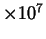 mi, 1.5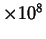 km
- Calculations with scientific notation
- How many miles in a LY?
- How many Earth diameters across is the Sun? (
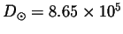 mi,
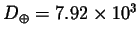 mi)
- How many Sun diameters fit between the Earth and the Sun?
- How many Moon diameters fit between the Earth and Moon? (
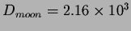 mi,
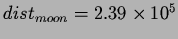 mi)
- Also:
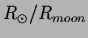 =
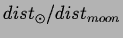 = 400
- Use powers of ten, or ``orders of magnitude"
- Focus on the power of 10 in scientific notation.
- Multiplying - add powers
- Dividing - subtract power of denom. from power of num.
- Examples
- Compare the ly to the pc:
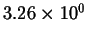 ly/pc.
- Compare distance between stars to a stars diameter.
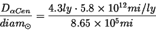
- Compare masses of Earth and Sun.
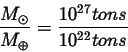
- Compare a person to a chair.
- Logarithms and powers
- 1 = 10

- 10 = 10
- 100 = 10
- 1,000,000 = 10
- 31.6227766 = 10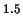
Next: About this document ...
Jason Pinkney
2003-12-16